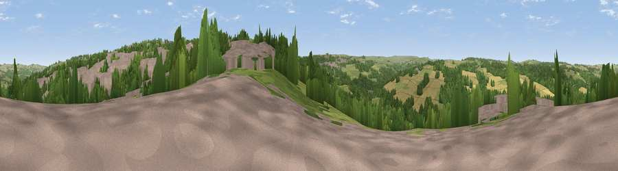

Viewpoint near Benfieldside
#15111 in England · top 34% of its area beats it · near Benfieldside · access?Where it is
The exact computed spot (NZ 10875 52675). Click the marker for map links.
Public access: no public right of way or access land is recorded at this exact spot — it may be on private land. Computed from Natural England's CRoW access layer and OpenStreetMap rights of way — not the legal definitive map. Always verify locally.
The view, rendered

A 360° render of this exact spot computed from the terrain model, tree cover and land cover — summer colours, afternoon light, calibrated against photographs of famous viewpoints. Real trees, hedges and buildings will differ in detail.
The panorama
Grey silhouette: terrain skyline in each direction (720 bearings, Earth curvature and refraction included). Dashed green: skyline with trees (+15 m) and buildings (+8 m) as obstacles. Blue strip: how far the ground is visible on each bearing.
Where the view opens
Wedge length = distance to the farthest visible ground on that bearing (vegetation-aware). Rings at 10, 25 and 50 km.
What fills the view
53% grassland · 30% woodland · 9% built-up · 8% cropland
Angular shares of the visible panorama (visual magnitude), not map area. Landscape diversity 0.48 (0–1 Shannon).
Key numbers
More beautiful places nearby
The staircase of upgrades: each row has a higher view potential than everything closer. Driving times are estimates from straight-line distance, calibrated against real road routing — check an actual route before setting out.
| Place | Direction | Drive | Score |
|---|---|---|---|
| Viewpoint near Medomsley | ENE · 1 km | ~2 min | 60.7 |
| Pontop Pike | E · 4 km | ~9 min | 77.8 |
| Little Dun Fell | WSW · 45 km | ~65 min | 78.4 |
| Cross Fell | WSW · 46 km | ~66 min | 78.7 |
| Viewpoint near Rothbury | N · 46 km | ~67 min | 81.1 |
| Dove Crag | N · 46 km | ~67 min | 82.3 |
| Viewpoint near Lazenby | SE · 57 km | ~79 min | 86.4 |
| Warsett Hill | ESE · 66 km | ~89 min | 86.8 |
54.86873, -1.83208 · source: screening · position refined by local search. Computed location — check access rights before visiting.